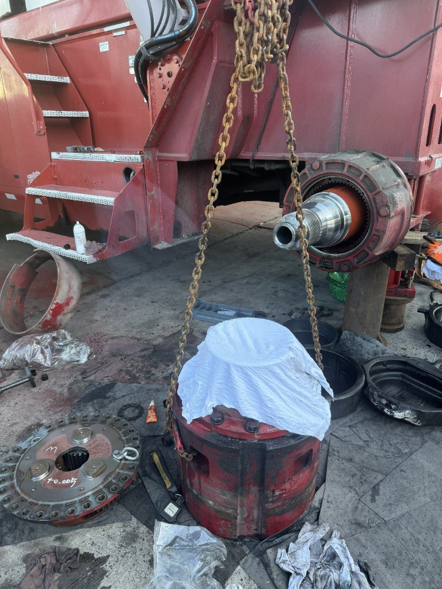

Work orders & dispatch
Track every job from the first call through bay time, parts, and sign-off — with labor and technician workflows built for fleet and heavy-duty repair, not generic retail POS.

One job record from intake to close
Work orders tie together the customer, unit, complaint, labor lines, parts, notes, and status in a single record your office and techs can work from. No re-keying between dispatch, the bay, and billing — changes flow through the same job.
Dispatch & technician workflows
- Assign jobs to technicians and track who is working what
- Labor lines with rates, hours, and job codes tied to the work order
- Schedule board for planning bay and field work
- Status tracking from open through review, complete, and invoiced
- Internal notes and customer-facing updates kept with the job
Field and mobile tie-in
Technicians and operators on the RepairFront mobile app can update meters, upload photos, complete regulatory inspection checklists, and submit work for office review — all linked back to the unit and work order your shop already has on file.
Estimates before the wrench turns
Send estimates for customer approval through the customer portal. Fleet customers can review line detail, approve or decline, and keep a paper trail without phone tag between dispatch and accounts payable.